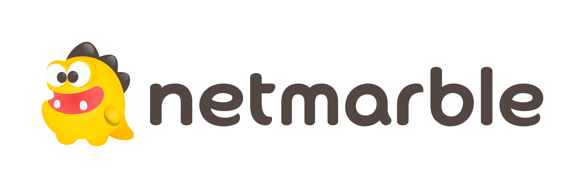

스톤에이지의 역사
스톤에이지
이니엄
넷마블
넷마블이란?

방준혁이 대주주로 있는 넷마블에서 서비스하는
포털사이트
명칭으로, 2018년 3월 넷마블게임즈에서 넷마블로 사명 변경됐다.
PC포털사이트를 여전히 운영하고 있기는 하지만 사업집중도는 크지 않다고 보이고, 이미 모바일게임이 매출의 95%를 넘었다.
국내 게임 종목 중에서 시가총액 1위를 기록했었다.[2] 19년 1월 현재는 엔씨소프트가 다시 시총 1위, 넷마블이 2위다.